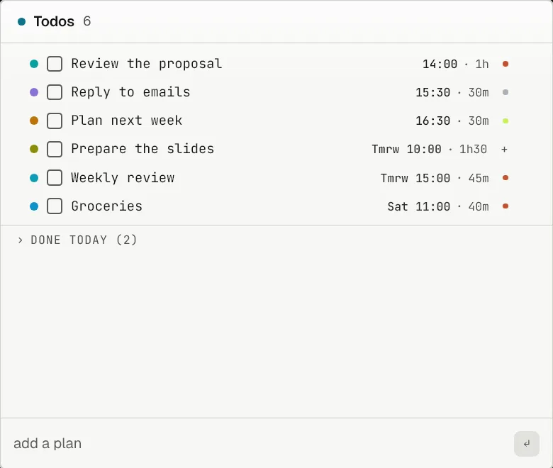
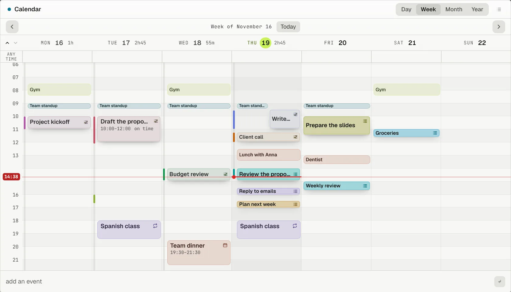
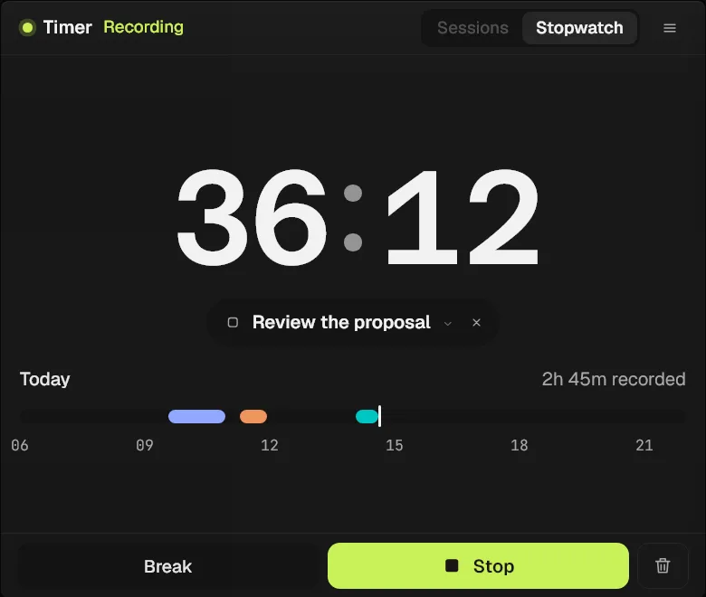
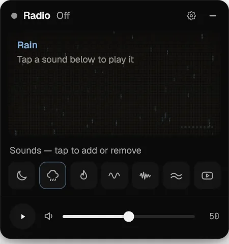
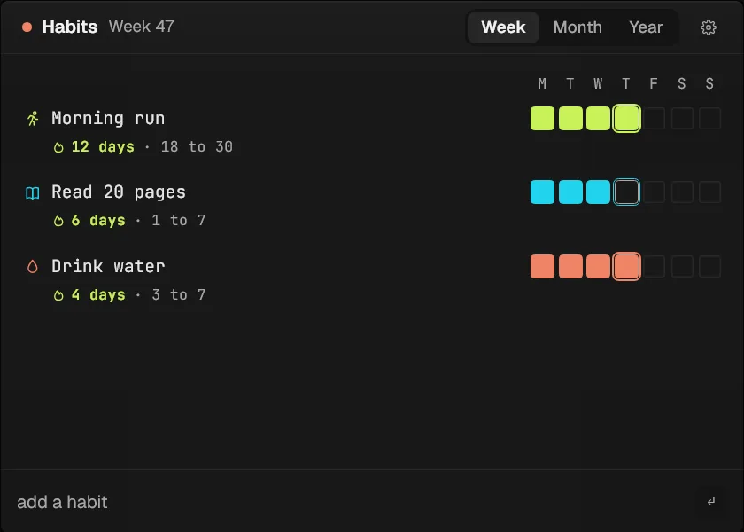
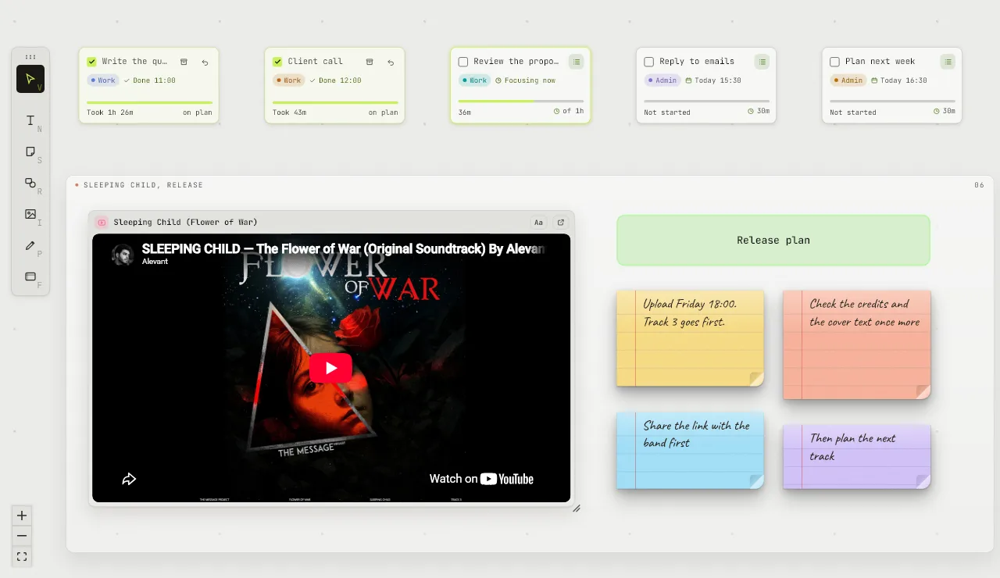
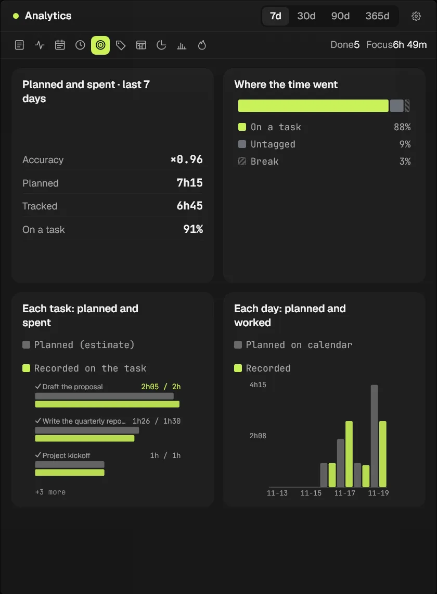
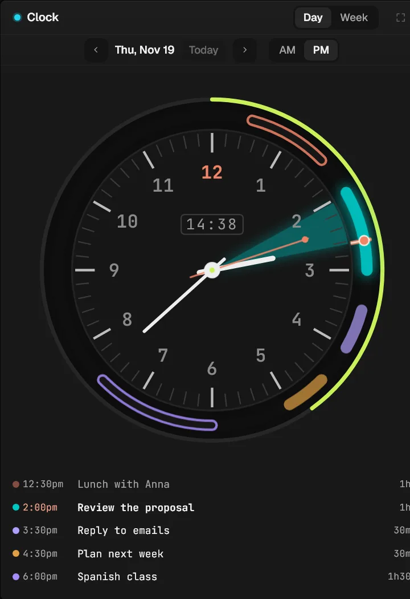
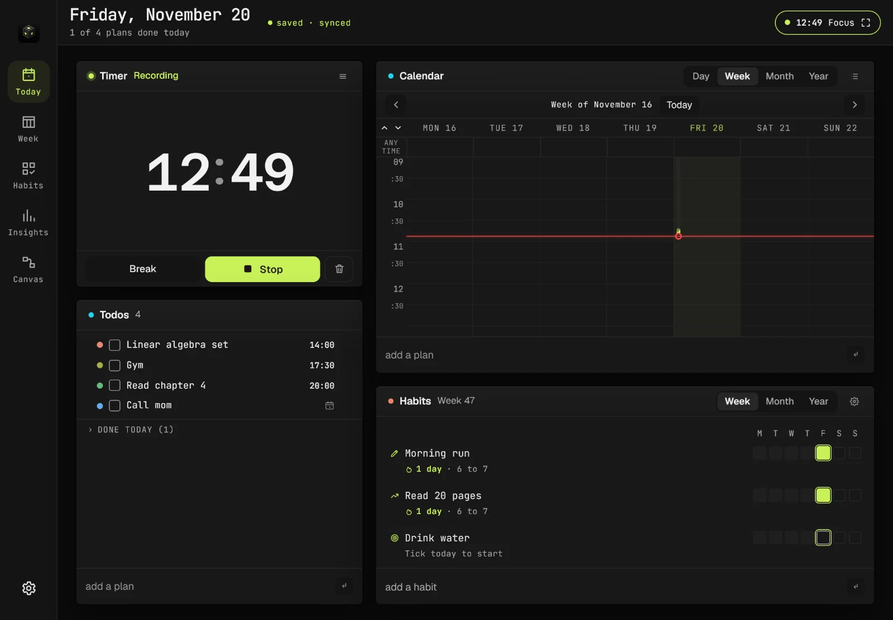

Install it
Free for Windows, with a step-by-step guide for Mac and Linux. No account, and your plans stay on your computer.
About a minute, no account needed.
How to installYour timer, to-dos, habits, calendar, focus sounds, whiteboard and time tracking live on one canvas and work together. Plan the day, then watch it happen.Timer, to-dos, habits and calendar, together on one canvas.
Drag a block, or swipe to see the whole day.
Install it on your computer. If you want your day on your phone too, add your own server.
Free for Windows, with a step-by-step guide for Mac and Linux. No account, and your plans stay on your computer.
About a minute, no account needed.
How to installOptional. Keep the same board on every computer, and open it on your phone in its browser. Nothing goes to anyone else's cloud.
About ten minutes, with Docker or one command.
Set up your serverEverything you kept in separate apps, in one place that knows how the parts fit together.
9 of 9 in one place
07:00 Plan
Write a plan the way you would say it. It gets its day, its time and its length, and waits in your list until its hour comes.

08:30 Calendar
Plans, appointments that happen once, and classes that repeat every week sit together as cards you can read. Pick one up to move it.

10:00 Focus
The timer knows what is planned now and writes the minutes onto that task. Prefer the 25-minute rhythm? Switch to Sessions. Add rain, a fire or your own music while you work.



13:00 Habits
Morning run, reading, water. One tap a day and the week fills in. The streak counts itself, and a rest day does not break it.
15:00 Canvas
Notes, pictures, PDFs, web pages and videos sit on the same canvas as your plans. Draw on it with the pen, and arrange it your way.

18:00 Review
Planned against spent, for every task and every day, in plain words. The clock draws the same day on a dial, with what comes next underneath.


Keep your boards in step with a small server you run at home. Every computer you connect shows the same day, and your phone opens it in its browser. Nothing goes to anyone else's cloud.
Set up your server

v0.15.0
A Calendar you can read, events that happen once, and your day on your phone.
All the release notesNot answered here?
Ask on GitHubFree for Windows. No account. Your plans stay on your computer.
Yes. KRNL0 costs nothing: no subscription, no trial, no account. The code is public, so anyone can see how it works, and every release becomes fully open source two years after it ships.
No. Everything is saved in one file on your own computer. No account, no tracking, no cloud. Close it, open it next week, and your day is exactly where you left it.
Windows has an installer today, and from then on KRNL0 updates itself. On macOS and Linux you can build it yourself from the source code on GitHub.
Yes, with your own KRNL0 server. It keeps your computers on the same board and opens it in your phone's browser. Setting one up takes about ten minutes, and the Server page shows how.
No. Every part works on its own. If you use Claude, you can ask it to plan or move things for you, with your own Claude plan.
Yes. Pick a style, Paper or Pro, choose a frame, and switch between light and dark whenever you like.
Your whole board is one file in Documents/krnl0 on your computer. Copy it to back it up, or move it to another computer.
They move to a Done list, then to an Archive grouped by day. Nothing is deleted, and the time you spent stays in your analytics.
No. It started as a university project, and it is for anyone who wants their day in one place: work, study, training, chores, all of it.
22:00 Day done